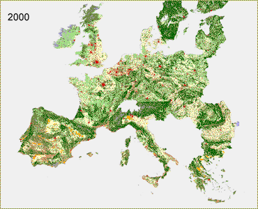

| Global Economy - A1 Most striking in the Global Economy scenario is the large extent of urbanization. The urbanization results from population growth, high economic growth and a larger use of space per person (e.g., due to the demand for shopping and recreation facilities), next to growth in the industry and services sector. Urbanization affects the whole of Europe with so-called hot-spots located near to the main cities and agglomerations such as the Dutch Randstad and the Flemish Diamond. The scenario assumes a lack of spatial policies to prevent urban sprawl. Urbanization therefore has strong impacts on the landscapes in many parts of Europe. Since abandonment of agricultural land occurs in most countries these areas are partly used for residential, industrial and recreational purposes. In less accessible areas with low population pressure spontaneous development of nature is expected. |
 Click here for full screen version |